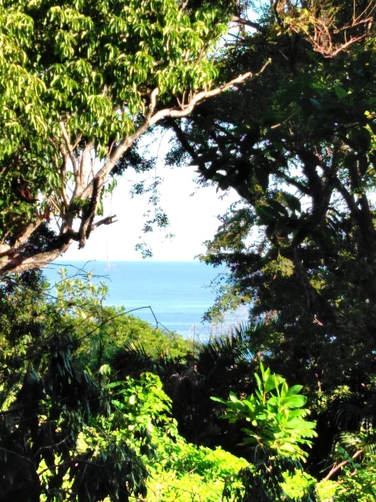

...Like a Tree Planted by Streams of Water........No Worries........

Based on:
Jeremiah 17:7-8
“But blessed is the one who trusts in the Lord,
whose confidence is in him.
They will be like a tree planted by the water
that sends out its roots by the stream.
It does not fear when heat comes;
its leaves are always green.
It has no worries in a year of drought
and never fails to bear fruit.”
and Psalm 1:1-3
Blessed is the one
who does not walk in step with the wicked
or stand in the way that sinners take
or sit in the company of mockers,
but whose delight is in the law of the Lord,
and who meditates on his law day and night.
That person is like a tree planted by streams of water,
which yields its fruit in season
and whose leaf does not wither—
whatever they do prospers.
When trials and tests come, we tend to be afraid, to wonder how we are going to get through this, but the Word of God says that if we trust in Him, we have no need to fear because when we trust Him, have faith in Him, we are like trees planted by streams of water.
God is our provider, he has everything under control, if we have Him, we have everything we need to go through the test, the trial, the heat.
Sometimes in life , it feels like we are going through a drought - a dry place, a hard time, a time when it seems that we don't have what we need for life, what we need to survive this drought, but we don't have the same sources as those in the world , our source is God. God who is ALL POWERFUL, for whom NOTHING IS IMPOSSIBLE!
Therefore, as long as we continue to put our trust and confidence in Him, WE WILL NEVER FAIL TO BEAR FRUIT!
HALLELUJAH!!!